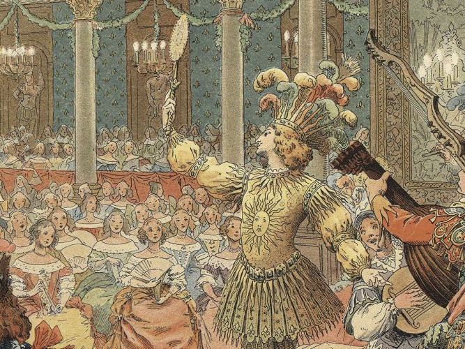
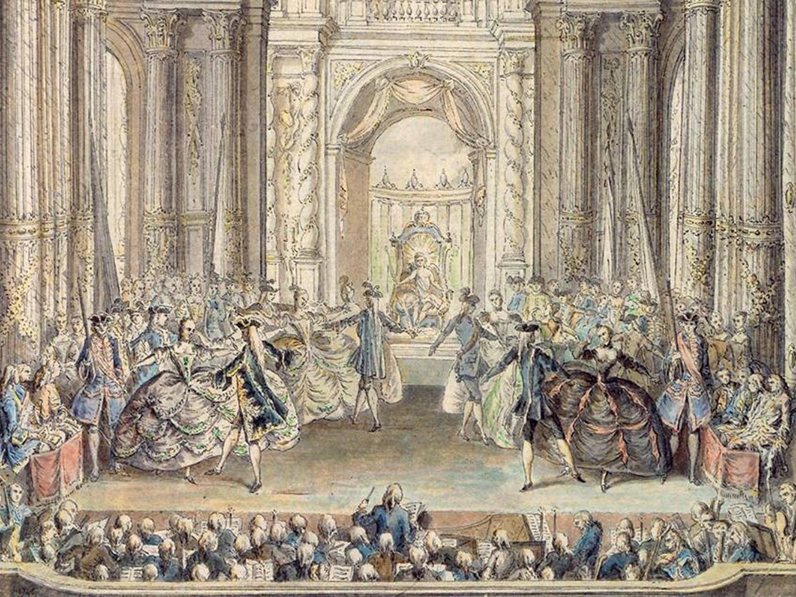
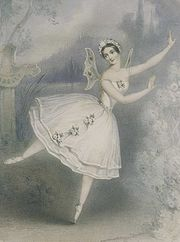

Balet je nastao na italijanskim renesansnim dvorovima 15. veka. Plemići i plemkinje su prisustvovali raskošnim događajima,posebno
na svadbenim proslavama, gde su ples i muzika stvarali spektakl. Majstori plesa su učili plemstvo koracima baleta, a dvor je učestvovao u
predstavama. U 16. veku, Katarina Mediči — italijanska plemkinja, supruga francuskog kralja Henrija II i veliki pokrovitelj umetnosti — počela je
da finansira balet na francuskom dvoru. Njeni detaljno razrađeni festivali podstakli su rast baleta de cour, programa koji je uključivao ples, dekoraciju,
kostime, pesmu, muziku i poeziju. Vek kasnije, kralj Luj XIV je pomogao da se popularizuje i standardizuje ova umetnička forma. Strastveni igrač, i sam je izveo mnoge
uloge, uključujući i ulogu Kralja Sunca u baletu "Ballet de la nuit". Njegova ljubav prema baletu podstakla je
uzdizanje ove umetničke forme iz hobija za amatere u poduhvat koji zahteva profesionalnu obuku.
1661. godine u Parizu je otvorena plesna akademija, a 1681. balet se sa dvorova preselio na scenu. Francuska opera "Le Triomphe de
l’Amour" uključila je elemente baleta, stvarajući dugogodišnju opersko-baletsku tradiciju u Francuskoj. Sredinom 1700-ih francuski
majstor baleta Žan Žorž Nover se pobunio protiv spajanja opere i baleta, verujući da balet može da stoji samostalno kao umetnička
forma. Njegove ideje — da balet treba da sadrži ekspresivan, dramski pokret koji treba da otkrije odnose između likova — podstakle
su uvodjenje dramskog stila "balet d’action" koji kroz igru prenosi priču. Noverovo delo se smatra pretečom narativnih baleta 19.
veka.


Balet u 19. veku

Rani klasični baleti kao što su "Žizel" i "La Silfida" nastali su tokom romantičnog pokreta u prvoj polovini 19. veka. Ovaj pokret
je uticao na umetnost, muziku i balet. Ona se bavila natprirodnim svetom duhova i magije i često je prikazivala žene kao pasivne i
krhke. Ove teme se ogledaju u baletima tog vremena i nazivaju se romantičnim baletima. Ovo je takođe period kada je ples na vrhovima
nožnih prstiju u špic baletankama postao norma za balerinu. Predstavljena je romantična tutu, puna suknja dužine do teleta od tila.
Popularnost baleta je porasla u Rusiji, a tokom druge polovine 19. veka ruski koreografi su ga podigli na nove visine. "Krcko Oraščić",
"Uspavana lepotica" Marijusa Petipa i "Labudovo jezero" Petipa i Leva Ivanova predstavljaju klasični balet u njegovoj najvećoj formi.
Osnovna namena
je bila da se u najvećoj meri prikaže klasična tehnika — rad na vrhovima nožnih prstiju, visoka ekstenzija, preciznost pokreta i okretanja
(rotacija nogu ka spolja od kuka). U priču su koreografisane komplikovane sekvence koje pokazuju zahtevne korake, skokove i okrete.
Klasična tutu, mnogo kraća i čvršća od romantične tutu, predstavljena je u to vreme kako bi otkrila noge balerine i poteškoće njenih pokreta i rada stopala.
Balet danas
Koreograf i osnivač Njujorškog baleta, Džordž Balanšin, ruski emigrant u Americi, dodatno je transformisao balet. On je predstavio ono
što danas nazivamo
neoklasičnim baletom, koji predstavlja proširenje klasične forme. Mnogi ga takođe smatraju najvećim inovatorom
savremenog "bez-zapletnog" baleta. Bez jasnog narativnog toka, njegov cilj je da koristi pokrete kako bi izrazio muziku
i osvetlio ljudske emocije i napore.Kroz svoje revolucionarne ideje i kreativnost, Balanšin je pružio inspiraciju
budućim generacijama koreografa, ističući važnost izražavanja muzike i emocija kroz pokret. Balet u 21. veku doživljava raznolikost i inovaciju, ostajući istovremeno
ukorijenjen u svojoj bogatoj tradiciji. Tradicionalni elementi ove umetnosti
i dalje su prisutni, s gracioznim pokretima, tehničkom preciznošću i estetskom elegancijom. Međutim, balet se takođe
otvorio prema novim pristupima i stilovima koji su oblikovali njegovu evoluciju u poslednjim decenijama. Savremeni
baletski komadi istražuju nove teme, dublje se bave psihološkim aspektima i društvenim pitanjima. Plesači koriste eksperimentalne pokrete, kombinujući klasične
tehnike s elementima savremenog plesa i drugih plesnih stilova. Ova nova sloboda izraza donosi
osveženje i originalnost, stvarajući plesne priče koje su sve više bliske modernoj publici. Tehničke veštine plesača se
i dalje usavršavaju. Balet postaje sve zahtevniji, sa izazovnim akrobatskim elementima, brzim promenama ritma i visokom fizičkom zahtevnošću. Plesači se posvećuju
godinama rada i predanosti kako bi postigli izvanrednu snagu, fleksibilnost
i kontrolu svog tela. Uz sve ove promene, balet i dalje ostaje prefinjena umetnost koja nas očarava svojom gracioznošću
i ekspresivnošću. Plesači u 21. veku donose novu energiju i kreativnost na scenu, dok istovremeno čuvaju i poštuju temelje baletske tradicije. Balet je i dalje
jedinstvena forma umetnosti koja ima moć da prenese emocije i priče bez reči, inspirišući publiku širom sveta.